So far, we’ve covered the general structure of large language models (LLMs) and learned that they are pretrained on vast amounts of text. In this article, we will focus on preparing input text for training LLMs. This involves splitting text into individual word and subword tokens, building a vocabulary, and exploring Byte Pair Encoding (BPE). Finally, we'll implement a PyTorch data-loading strategy to produce input-output pairs for training.
Key Takeaways
- Deep learning models require categorical text data to be converted into continuous-valued vectors, known as embeddings.
- Tokenization splits raw text into words, characters, or subwords like Byte Pair Encoding (BPE) to build a vocabulary.
- Sliding-window data loaders structure continuous token sequences into input-target pairs for next-token prediction.
- Absolute positional embeddings inject spatial sequence order directly into token representation vectors.
Understanding Word Embeddings
LLMs cannot process raw text directly. Since text is categorical, it is incompatible with the mathematical operations used to implement and train neural networks. Therefore, we need a way to represent words as continuous-valued vectors. The concept of converting data into a vector format is referred to as embedding.
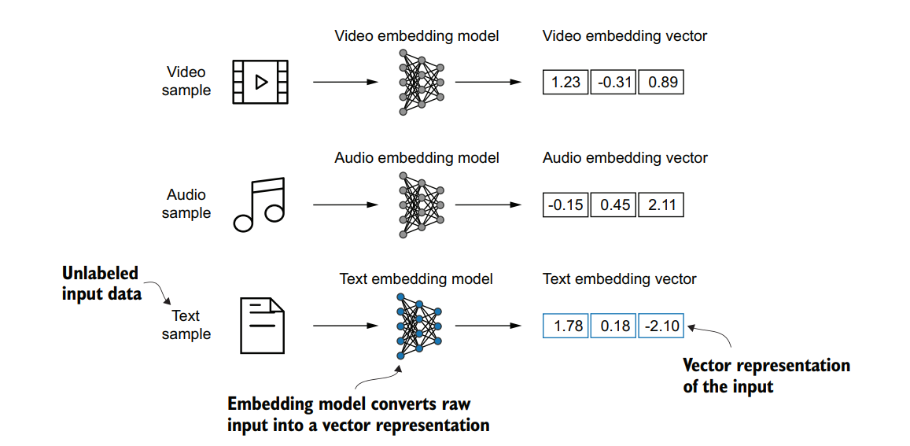
This figure illustrates the process of converting raw data into a three-dimensional numerical vector.
At its core, an embedding is a mapping from discrete objects, such as words, images, or even entire documents, to points in a continuous vector space.
Earlier frameworks like Word2Vec generated embeddings by training a neural network to predict a word's context. The underlying premise is that words appearing in similar contexts share similar meanings.
Word embeddings can have varying dimensions, from one to thousands. A higher dimensionality captures more nuanced relationships but at the cost of computational efficiency.
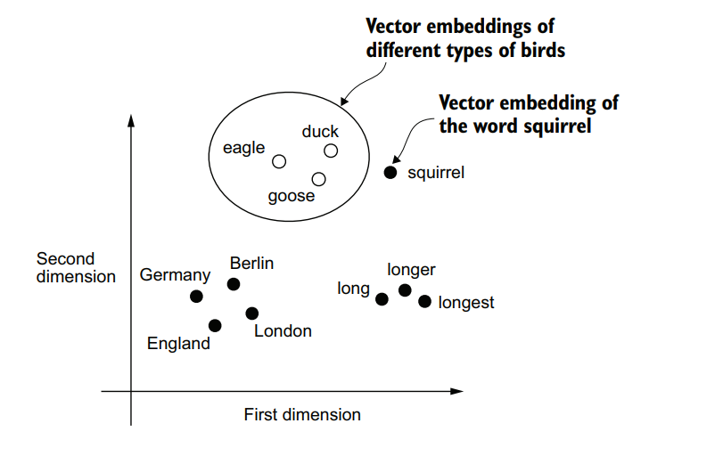
If word embeddings are two-dimensional, we can plot them in a two-dimensional scatterplot for visualization purposes as shown here. When using word embedding techniques, such as Word2Vec, words corresponding to similar concepts often appear close to each other in the embedding space. For instance, different types of birds appear closer to each other in the embedding space than countries and cities.
While we can use pretrained models such as Word2Vec to generate embeddings, LLMs commonly produce their own embeddings as part of their input layer, updating them during training. The advantage of optimizing the embeddings as part of LLM training instead of using static Word2Vec representations is that the embeddings are optimized to the specific task and data at hand.
Tokenizing Text and Building a Vocabulary
Tokenizing is the process of splitting text into individual words or special characters.
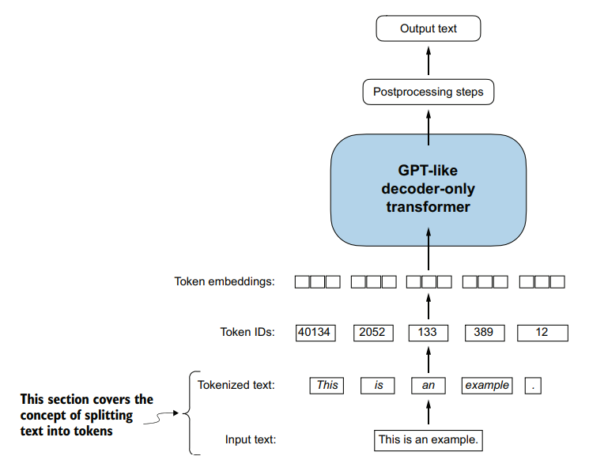
A view of the text processing steps in the context of an LLM. Here, we split an input text into individual tokens, which are either words or special characters, such as punctuation characters.
Below is an example of how tokenization works when implemented manually using regular expressions:
import re
text = "Hello, world. Is this-- a test?"
result = re.split(r'([,.:;?_!"()\']|--|\s)', text)
result = [item.strip() for item in result if item.strip()]
print(result)# Output
['Hello', ',', 'world', '.', 'Is', 'this', '--', 'a', 'test', '?']When developing a simple tokenizer, whether we encode whitespaces as separate characters or remove them depends on our requirements. Removing whitespaces reduces memory and computing requirements. However, keeping whitespaces can be useful if we train models sensitive to text structure (such as Python code, which is sensitive to indentation and spacing).
To convert these Python strings into integer representations, we must build a vocabulary.
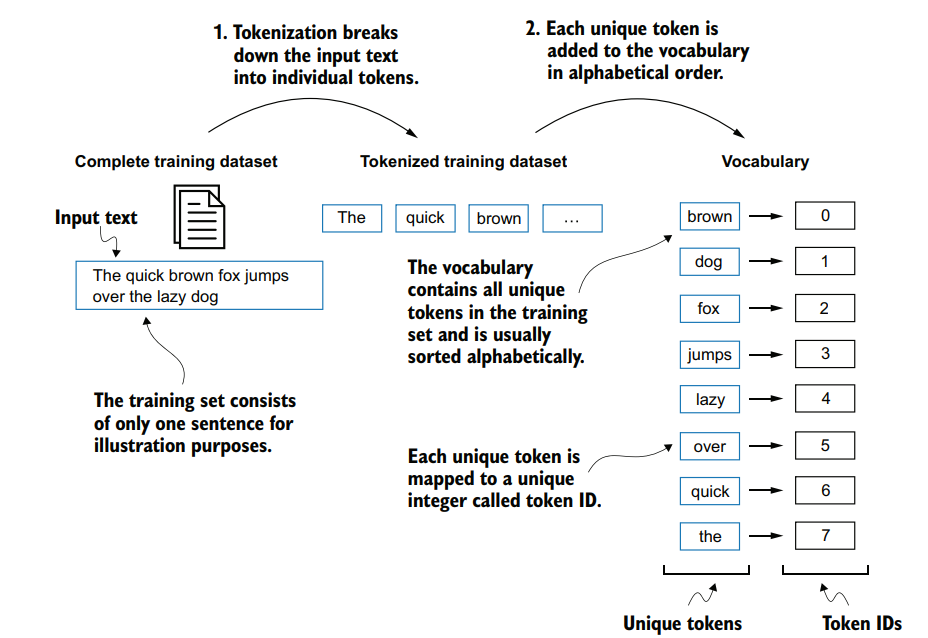
We build a vocabulary by tokenizing the entire text in a training dataset into individual tokens. These individual tokens are then sorted alphabetically, and duplicate tokens are removed. The unique tokens are then aggregated into a vocabulary that defines a mapping from each unique token to a unique integer value. The depicted vocabulary is purposefully small and contains no punctuation or special characters for simplicity.
We can build a vocabulary class using text from a short story, “The Verdict” (saved as
the-verdict.txt):
import re
with open("the-verdict.txt", "r", encoding="utf-8") as file:
raw_text = file.read()
preprocessed = re.split(r'([,.;:?_!"()\']|--|\s)', raw_text)
preprocessed = [item.strip() for item in preprocessed if item.strip()]
all_words = sorted(set(preprocessed))
vocab_size = len(all_words)
vocab = {token: integer for integer, token in enumerate(all_words)}
for i, item in enumerate(vocab.items()):
print(item)
if i >= 50:
break# Output
('!', 0)
('"', 1)
("'", 2)
...
('Her', 49)
('Hermia', 50)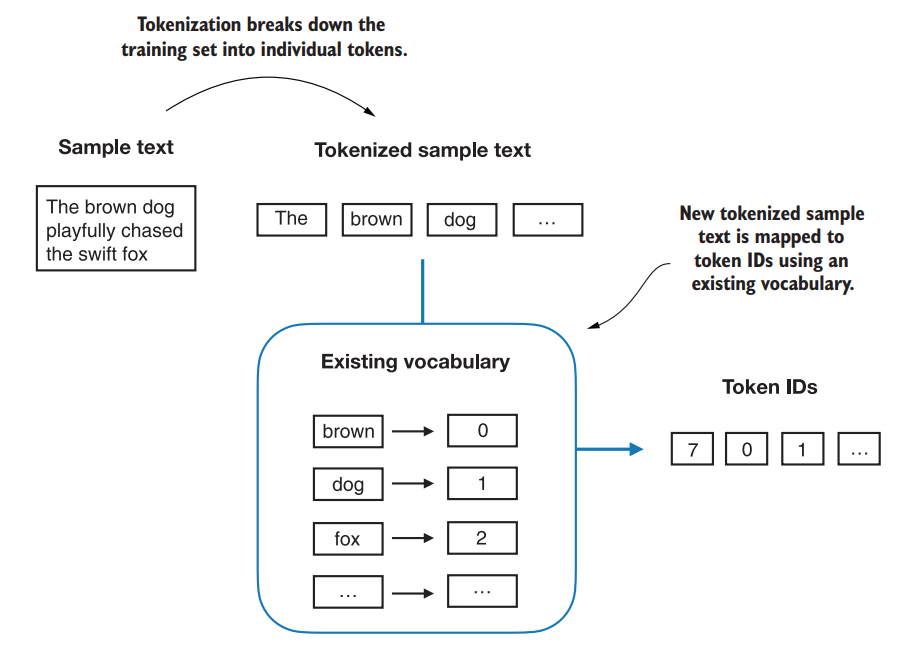
Starting with a new text sample, we tokenize the text and use the vocabulary to convert the text tokens into token IDs. The vocabulary is built from the entire training set and can be applied to the training set itself and any new text samples.
Let’s implement a complete tokenizer class in Python with an encode method that maps text to
token IDs via the vocabulary, and a decode method that performs the reverse lookup:
class SimpleTokenizerV1:
def __init__(self, vocab):
self.str_to_int = vocab
self.int_to_str = {i: s for s, i in vocab.items()}
def encode(self, text):
preprocessed = re.split(r'([,.?_!"()\']|--|\s)', text)
preprocessed = [item.strip() for item in preprocessed if item.strip()]
ids = [self.str_to_int[s] for s in preprocessed]
return ids
def decode(self, ids):
text = " ".join(self.int_to_str[i] for i in ids)
text = re.sub(r'\s+([,.?!"()\'])', r'\1', text)
return textWe can instantiate and test this tokenizer as follows:
tokenizer = SimpleTokenizerV1(vocab)
text = """
"It's the last he painted, you know,"
Mrs. Gisburn said with pardonable pride.
"""
ids = tokenizer.encode(text)
print(ids)
print(tokenizer.decode(ids))# Output
[1, 56, 2, 848, 986, 602, 533, 744, 5, 1124, 596, 5, 1, 67, 7, 38, 849, 1106, 752, 791, 7]
'" It\' s the last he painted, you know," Mrs. Gisburn said with pardonable pride.'While this tokenizer works for in-vocabulary sentences, encoding text with unknown words will raise a lookup error.
To handle unknown words, we can introduce special context tokens. We add <|unk|> to
represent out-of-vocabulary words and <|endoftext|> to signal boundaries between
concatenated, unrelated documents.
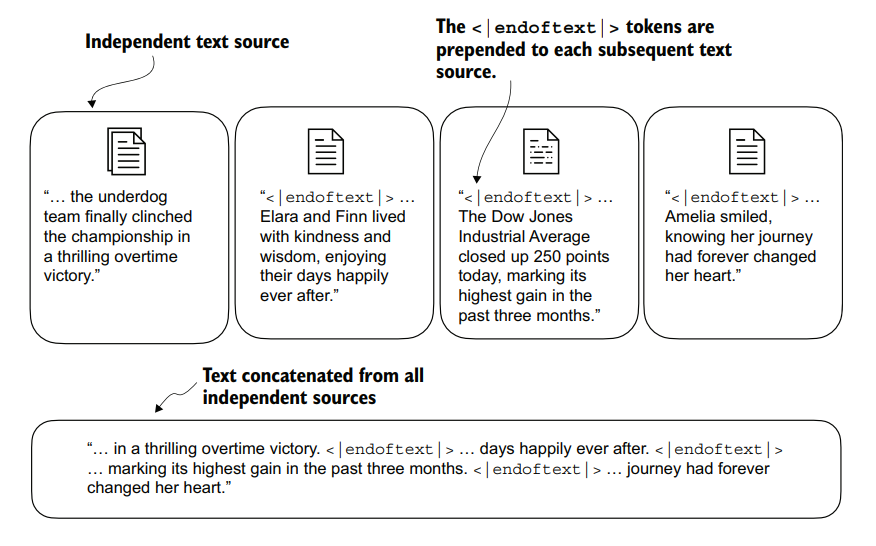
When working with multiple independent text sources, we add <|endoftext|> tokens between these texts. These <|endoftext|> tokens act as markers, signaling the start or end of a particular segment, allowing for more effective processing and understanding by the LLM.
Here is the updated class, SimpleTokenizerV2:
class SimpleTokenizerV2:
def __init__(self, vocab):
self.str_to_int = vocab
self.int_to_str = {i: s for s, i in vocab.items()}
def encode(self, text):
preprocessed = re.split(r'([,.:;?_!"()\']|--|\s)', text)
preprocessed = [item.strip() for item in preprocessed if item.strip()]
preprocessed = [
item if item in self.str_to_int else "<|unk|>" for item in preprocessed
]
ids = [self.str_to_int[s] for s in preprocessed]
return ids
def decode(self, ids):
text = " ".join([self.int_to_str[i] for i in ids])
text = re.sub(r'\s+([,.:;?!"()\'])', r'\1', text)
return text
If we concatenate two text samples separated by <|endoftext|>, this tokenizer handles
unknown words without crashing:
text1 = "Hello, do you like tea?"
text2 = "In the sunlit terraces of the palace."
text = " <|endoftext|> ".join((text1, text2))
# Assuming vocab includes special tokens like "<|unk|>" and "<|endoftext|>"
vocab["<|unk|>"] = len(vocab)
vocab["<|endoftext|>"] = len(vocab)
tokenizer = SimpleTokenizerV2(vocab)
print(tokenizer.encode(text))
print(tokenizer.decode(tokenizer.encode(text)))# Output
[1128, 5, 355, 1124, 628, 973, 10, 1129, 55, 986, 954, 982, 720, 986, 1128, 7]
'<|unk|>, do you like tea? <|endoftext|> In the sunlit terraces of the <|unk|>'Byte Pair Encoding (BPE)
Modern LLMs utilize a more sophisticated tokenization scheme called Byte Pair Encoding (BPE). Instead of
replacing unknown words with <|unk|>, BPE tokenizers break unknown words down into
subwords and individual characters. This allows the tokenizer to parse any sequence of text without relying
on fallback tokens.
For implementation, we can use the tiktoken library, which contains the GPT-2 BPE tokenizer
encoding:
import tiktoken
tokenizer = tiktoken.get_encoding("gpt2")
text = "Hello, do you like tea? <|endoftext|> In the sunlit terraces of someunknownPlace."
integers = tokenizer.encode(text, allowed_special={"<|endoftext|>"})
print(integers)
strings = tokenizer.decode(integers)
print(strings)# Output
[15496, 11, 466, 345, 588, 8887, 30, 220, 50256, 554, 262, 4252, 18250, 8812, 2114, 286, 617, 34680, 27271, 13]
"Hello, do you like tea? <|endoftext|> In the sunlit terraces of someunknownPlace."
As demonstrated, BPE parses the compound word someunknownPlace into subword token IDs
[617, 34680, 27271], representing " some", "unknown", and
"Place".
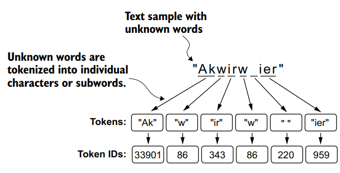
Data Sampling with a Sliding Window
Next, we generate the training input-target pairs using a sliding-window approach over the encoded text.
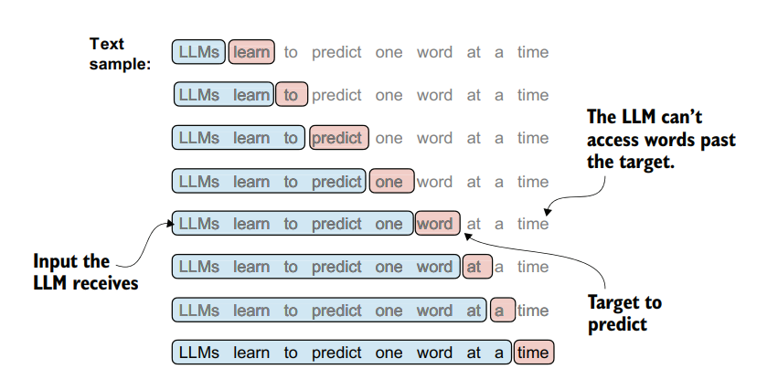
Given a text sample, extract input blocks as subsamples that serve as input to the LLM, and the LLM’s prediction task during training is to predict the next word that follows the input block.
Here is a basic loop illustrating how we extract inputs and shifted targets:
with open("the-verdict.txt", "r", encoding="utf-8") as f:
raw_text = f.read()
enc_text = tokenizer.encode(raw_text)
context_size = 4
for i in range(1, context_size + 1):
context = enc_text[:i]
desired = enc_text[i]
print(context, "---->", desired)
print(tokenizer.decode(context), "---->", tokenizer.decode([desired]))# Output
[40] ----> 367
I ----> H
[40, 367] ----> 2885
I H ----> AD
[40, 367, 2885] ----> 1464
I HAD ----> always
[40, 367, 2885, 1464] ----> 1807
I HAD always ----> thought
Before passing these arrays to PyTorch models, we implement an efficient Dataset class and a
DataLoader wrapping it.
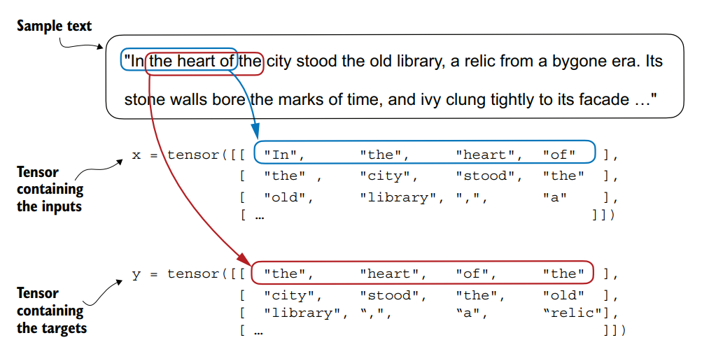
To implement efficient data loaders, we collect the inputs in a tensor, x, where each row represents one input context. A second tensor, y, contains the corresponding prediction targets (next words), which are created by shifting the input by one position.
Here is the correct implementation of the PyTorch Dataset and its associated data-loading
function:
import torch
from torch.utils.data import Dataset, DataLoader
class GPTDatasetv1(Dataset):
def __init__(self, txt, tokenizer, max_length, stride):
self.input_ids = []
self.target_ids = []
token_ids = tokenizer.encode(txt, allowed_special={"<|endoftext|>"})
for i in range(0, len(token_ids) - max_length, stride):
input_chunk = token_ids[i:i + max_length]
target_chunk = token_ids[i + 1:i + max_length + 1]
self.input_ids.append(torch.tensor(input_chunk))
self.target_ids.append(torch.tensor(target_chunk))
def __len__(self):
return len(self.input_ids)
def __getitem__(self, idx):
return self.input_ids[idx], self.target_ids[idx]
def create_dataloader_v1(txt, batch_size=4, max_length=256,
stride=128, shuffle=True, drop_last=True,
num_workers=0):
tokenizer = tiktoken.get_encoding("gpt2")
dataset = GPTDatasetv1(txt, tokenizer, max_length, stride)
dataloader = DataLoader(
dataset,
batch_size=batch_size,
shuffle=shuffle,
drop_last=drop_last,
num_workers=num_workers
)
return dataloaderCreating Token and Positional Embeddings
The final step in preparing the input text for LLM training is to convert the token IDs into embedding vectors.
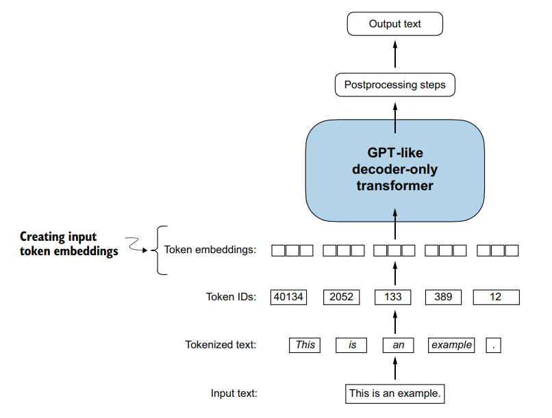
Preparation involves tokenizing text, converting text tokens to token IDs, and converting token IDs into embedding vectors.
First, we initialize the embedding weight matrix with random values using torch.nn.Embedding.
Let’s visualize this using a demo vocabulary of size 6 and a 3-dimensional embedding size:
vocab_size = 6
output_dim = 3
input_ids = torch.tensor([2, 3, 5, 1])
torch.manual_seed(123)
embedding_layer = torch.nn.Embedding(vocab_size, output_dim)
print(embedding_layer.weight)# Output
Parameter containing:
tensor([[ 0.3374, -0.1778, -0.1690],
[ 0.9178, 1.5810, 1.3010],
[ 1.2753, -0.2010, -0.1606],
[-0.4015, 0.9666, -1.1481],
[-1.1589, 0.3255, -0.6315],
[-2.8400, -0.7849, -1.4096]], requires_grad=True)The embedding layer performs a simple lookup operation:
print(embedding_layer(input_ids))# Output
tensor([[ 1.2753, -0.2010, -0.1606],
[-0.4015, 0.9666, -1.1481],
[-2.8400, -0.7849, -1.4096],
[ 0.9178, 1.5810, 1.3010]], grad_fn=) While these embedding vectors capture semantic information, LLM self-attention mechanisms do not inherently recognize positional order. The same token ID yields the same vector representation, regardless of its position in the sequence. To fix this, we must inject positional embeddings.
There are two primary paradigms: relative and absolute positional embeddings. Relative positional embeddings define connections based on distance between tokens. Absolute positional embeddings associate a unique position vector with each sequence index.
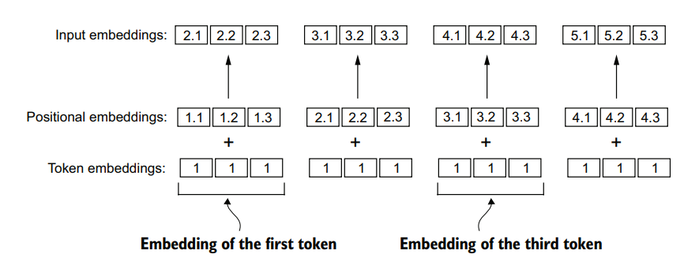
Positional embeddings are added to the token embedding vector to create the input embeddings for an LLM. The positional vectors have the same dimension as the original token embeddings. The token embeddings are shown with value 1 for simplicity.
GPT models utilize absolute positional embeddings that are optimized during training. We construct these positional embeddings sequentially through the following steps.
Step 1: Loading a Batch of Token IDs
First, let's extract a batch of input tokens using our data loader:
vocab_size = 50257
output_dim = 256
token_embedding_layer = torch.nn.Embedding(vocab_size, output_dim)
max_length = 4
dataloader = create_dataloader_v1(raw_text, batch_size=8, max_length=max_length, stride=max_length, shuffle=False)
data_iter = iter(dataloader)
inputs, targets = next(data_iter)
print("Token IDs:\n", inputs)
print("\nInputs shape:\n", inputs.shape)# Output
Token IDs:
tensor([[ 40, 367, 2885, 1464],
[ 1807, 3619, 402, 271],
[10899, 2138, 257, 7026],
[15632, 438, 2016, 257],
[ 198, 11274, 5891, 1576],
[ 438, 568, 340, 373],
[ 645, 1049, 5975, 284],
[ 502, 284, 3285, 326]])
Inputs shape:
torch.Size([8, 4])As we can see, the token ID tensor is 8 × 4 dimensional, meaning that the data batch consists of eight text samples with four tokens each.
Step 2: Embedding Token IDs into Vectors
Let’s now use the embedding layer to embed these token IDs into 256-dimensional vectors:
token_embeddings = token_embedding_layer(inputs)
print(token_embeddings.shape)# Output
torch.Size([8, 4, 256])The 8 × 4 × 256–dimensional tensor output shows that each token ID is now embedded as a 256-dimensional vector.
Step 3: Instantiating the Positional Embedding Layer
For a GPT model’s absolute embedding approach, we just need to create another embedding layer that has the
same embedding dimension as the token_embedding_layer:
context_length = max_length
pos_embedding_layer = torch.nn.Embedding(context_length, output_dim)
pos_embeddings = pos_embedding_layer(torch.arange(context_length))
print(pos_embeddings.shape)# Output
torch.Size([4, 256])
The input to the pos_embeddings is usually a placeholder vector
torch.arange(context_length), which contains a sequence of numbers 0, 1, ..., up to the maximum
input length – 1. The context_length is a variable that represents the supported input size of
the LLM.
Step 4: Adding Token and Positional Embeddings
As we can see, the positional embedding tensor consists of four 256-dimensional vectors. We can now add
these directly to the token embeddings, where PyTorch will add the 4 × 256–dimensional
pos_embeddings tensor to each 4 × 256–dimensional token embedding tensor in each of the eight
batches:
input_embeddings = token_embeddings + pos_embeddings
print(input_embeddings.shape)# Output
torch.Size([8, 4, 256])
The input_embeddings we created are the embedded input examples that can now be processed by
the main LLM modules.
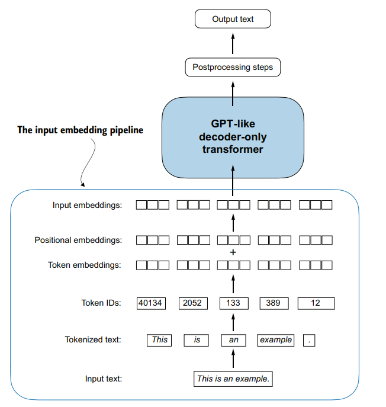
As part of the input processing pipeline, input text is first broken up into individual tokens. These tokens are then converted into token IDs using a vocabulary. The token IDs are converted into embedding vectors to which positional embeddings of a similar size are added, resulting in input embeddings that are used as input for the main LLM layers.
That concludes the chapter on text embeddings. In the upcoming chapter we will focus on what makes LLMs like ChatGPT special - the self-atention mechanism